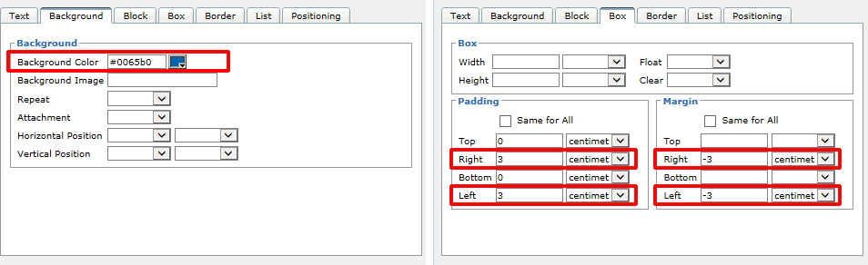
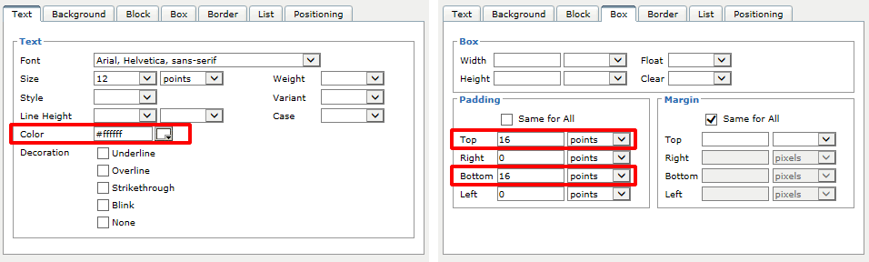
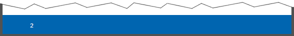
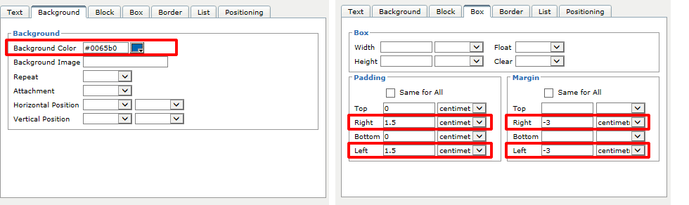
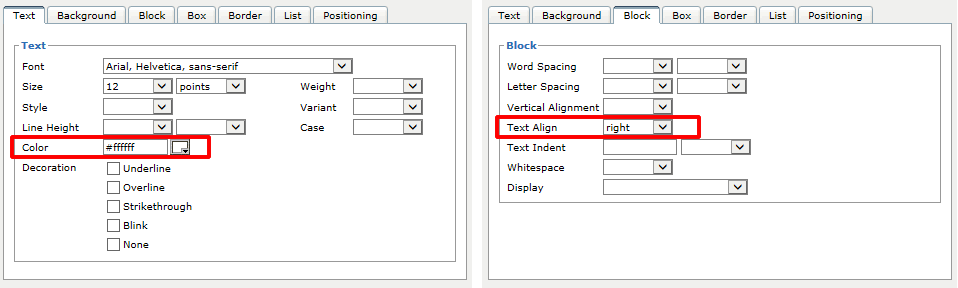
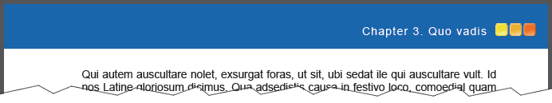

1.13.3.4. Styling the header and footer
The next step is to style the header- and footer bar. Docmenta has three pre-defined block-styles that define the formatting of the page header:
| Style-ID | Description |
|---|---|
| page_header | The style with ID "page_header" defines the formatting of the header area. This block fills the complete header area and appears on every page, except on cover pages. |
| page_header_box | The style with ID "page_header_box" defines the formatting of the table that is contained inside of the header area. This table consists of up to 2 rows with up to three columns. The header-table is rendered, only if content is defined for the given page type (content pages, table of contents, index, ...) and sequence (first page, odd pages, even pages, ...). See Section 2.6.2.1.5, “Header/Footer settings” on how to define the header content. |
| page_header_cell | This style defines the formatting of a table-cell inside of the header-table. |
Accordingly there are three block-styles that define the formatting of the page footer:
| Style-ID | Description |
|---|---|
| page_footer | The style with ID "page_footer" defines the formatting of the footer area. This block fills the complete footer area and appears on every page, except on cover pages. |
| page_footer_box | The style with ID "page_footer_box" defines the formatting of the table that is contained inside of the footer area. This table consists of up to 2 rows with up to three columns. The footer-table is rendered, only if content is defined for the given page type (content pages, table of contents, index, ...) and sequence (first page, odd pages, even pages, ...). See Section 2.6.2.1.5, “Header/Footer settings” on how to define the footer content. |
| page_footer_cell | This style defines the formatting of a table-cell inside of the footer-table. |
Note that after a new product has been created, these block-styles may not yet exist. However if you want to change the default formatting, you can just open the "Styles"-workbench, select block-styles, click the "New Style" button and create a block-style with one of the IDs listed in the tables above.
It is not necessary to create style-variants with name "print_variant" for the page-header and -footer styles (as we have done for the header2 style), because the page-header/footer styles only apply for PDF output anyhow.
First we set the background-color of the page_footer style to #0065B0 (blue). Furthermore we have to apply a trick to extend the blue background to the edges of the page: We set a left- and right-margin of -3cm. By setting a negative margin we extend the header/footer over the defined page-margins (see Section 1.13.3.1, “Setting the page margins”). Leave the top- and bottom-margin fields empty, as these values are controlled by the page-margin settings. Furthermore, to keep the contained footer-table at its original position, set a left- and right-padding of 3cm. The following screenshot summarizes the settings for the page_footer style:

Figure 1.13.13. Settings for block-style "page_footer"
As the page-number shall be shown as white text on blue background, we set the font-color of the page_footer_cell style to #FFFFFF. We also set a top- and bottom-padding of 16pt to increase the overall height of the footer-table:

Figure 1.13.14. Settings for block-style "page_footer_cell"
The page-number in the footer should now be rendered as follows:

Figure 1.13.15. Fixed page-number margins
For the header style page_header we have to apply the same settings as for the style page_footer, except that we reduce the padding to 1.5cm, because the logo image shall be nearer to the page-border:

Figure 1.13.16. Settings for block-style "page_header"
Because the chapter-title shall be shown as white text on blue background, we set the font-color of the page_footer_cell style to #FFFFFF. By default, the content in the center-cell of the header-table is centered. But we want the chapter-title to be aligned next to the logo-image. Therefore, we set the text-alignment to right.

Figure 1.13.17. Settings for block-style "page_header_cell"
Note that on even pages the header/footer-table is mirrored (as we have enabled the double-sided output option). This automatically changes the alignment from right to left on even pages (i.e. we do not have to create a separate style for even pages).
When you create a PDF preview, the header should be formatted as follows:

Figure 1.13.18. Preview of the page header
In case you need to fine-tune the formatting of the header/footer-table, you can assign a custom style to a specifc cell within the table. This can be done by using the %style placeholder (see Section 2.6.2.1.5, “Header/Footer settings”).